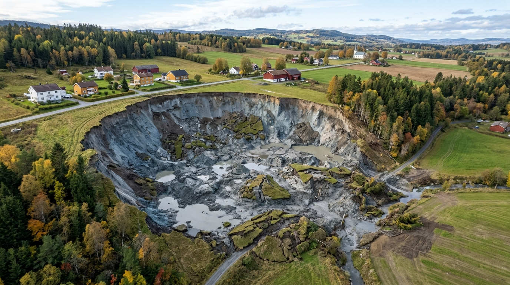
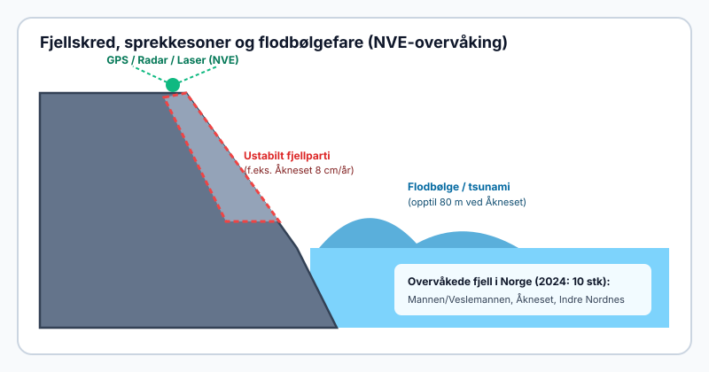

Skred og ras
Skred og ras betyr det samme: at tyngdekraften beveger jord, stein, fjellblokker eller snø ned en skråning. Geologene skiller mellom leir-, jord- og fjellskred.
Hvorfor er det så mye kvikkleire i Norge? Under istiden knuste isbreene fjell til fint steinmel – partikler mindre enn 0,002 mm (leire). Fordi istyngden presset landet langt ned, lå store deler av dagens lavland under havet (under den marine grensen). Når marin leire ble avsatt i salt havvann, la det seg saltkrystaller mellom de flate leirpartiklene i en åpen, stabil «korthusstruktur». Etter at landet steg, har regn- og grunnvann (ferskvann) piplet gjennom leira i tusenvis av år og vasket ut saltet. Da mister korthusstrukturen «limet» sitt, leira blir ustabil, og vi får .
Hvordan utløses skred – og hva med Telemark? Ved elveerosjon i tørrskorpa, graving, fylling eller rystelser kan kvikkleira kollapse og bli en tyntflytende leiresuppe (først et initialras, så hovedraset – omrørt leire etterpå blir tett og aldri kvikk igjen). Også i Telemark finnes det mye kvikkleire: Store deler av Skien og Porsgrunn langs Skienselva, Porsgrunnselva og Frierfjorden ligger under den marine grensen, med kartlagte soner bl.a. ved Gråtenmoen, Tollnes, Follestad, Klosterøya, Bøle og Nenset. Grunnen er trygg så lenge den ligger i ro, men graving og bygging krever strenge geotekniske undersøkelser.
Konsekvenser & kjente kvikkleireskred i Norge:
Kvikkleireskred kan skje brått selv i nesten flatt terreng og føre til tap av menneskeliv, evakuering av hele nabolag og brudd på hovedveier, jernbane, strøm og vann:
• Ask i Gjerdrum (30. desember 2020): Et 700 × 300 m stort skred tok med seg bolighus i Akershus; 10 mennesker (inkludert en gravid kvinne) omkom og over 1000 måtte evakueres.
• Nesvatnet i Levanger, Trøndelag (30. august 2025): Kvikkleireskred kuttet både ny og gammel E6 samt Nordlandsbanen. Én person omkom, og hovedfartsåren i Trøndelag var stengt i over to måneder med lange omkjøringer via fylkesveier og Sverige.
• Tidligere skred: Verdal (1893, 116 omkomne), Rissa (1978, største på 1900-tallet og første som ble filmet, 1 omkom) og Sørum (2016, 3 omkomne).


Jordskred
I de fleste fjell- og dalsider ligger det et lag av jord (stein, grus og sand dekket av vegetasjon) oppå den faste fjellgrunnen. Ved store mengder nedbør eller kraftig snøsmelting kan jorda bli helt vannmettet og plutselig begynne å bevege seg nedover som en flytende velling – et . Fordi slike skred ikke følger bekker og elveløp, kan de ramme hus og veier på overraskende steder, slik det skjedde under ekstremværet Hans i 2023.
Fjell- og steinskred & overvåking
Når mer enn 10 000 kubikkmeter stein og fjellpartier løsner og raser ut, kalles det (mindre mengder kalles steinskred og steinsprang). Vestlandet og Nord-Norge med unge landformer og bratte fjellsider er mest utsatt. Norges største fjellskred hittil var Tjelleskredet i Langfjorden i Romsdal i 1756, da 15 millioner m³ fjell raste ut og lagde 50 meter høye flodbølger.
kartlegger sprekkesoner og bruker GPS, radar og laser for å måle bevegelser. I 2024 var ti områder under konstant overvåking, blant annet Mannen (Veslemannen raste i sept. 2019 med 50 000–100 000 m³), Åkneset i Sunnylvsfjorden (beveger seg opptil 8 cm/år; kan i verste fall utløse opptil 80 m høy flodbølge) og Indre Nordnes ved Lyngenfjorden (overvåket siden 2007). Overvåking hindrer ikke skredet, men gjør det mulig å varsle og redde liv.

Sammendrag: Kapittel 3
• Ytre krefter er de nedbrytende kreftene på jordoverflata: forvitring (fast fjell smuldrer opp mekanisk eller kjemisk) og erosjon (en ytre kraft sliter løs, transporterer og avsetter løsmasser).
• Rennende vann lager både erosjonsformer (canyon, V-dal) og avsetningsformer (elvevifte, elveslette, delta).
• Isbreer er is og snø i bevegelse som eroderer ved skuring og plukking. Breene under istidene (siste 2,6 millioner år) formet U-daler, fjorder og alpine landskap – og de fleste norske breer smelter nå raskt tilbake.
• Norges landformer består av både gamle (vidder, heier, skjærgård) og yngre former (strandflate, fjorder, alpine former, elvedaler, deltaer, morener og marine avsetninger).
• Skred og ras skjer når tyngdekraften beveger jord, stein, fjellblokker eller snø ned en skråning. NVE, NGU og NGI kartlegger og overvåker utsatte områder for å varsle katastrofer og redde liv.
Repetisjons- og arbeidsoppgaver
Repetisjonsoppgaver
- Hva er et skred?
- Når og hvor ble den marine leira i Norge dannet?
- Hvordan oppstår kvikkleire? Hvilke deler av landet er mest utsatt for kvikkleireskred?
- Hva kan utløse kvikkleireskred?
- Hva kan forårsake jordskred?
- Hvilke deler av landet er mest utsatt for steinskred? Hvordan kartlegger forskerne faren for slike skred?
Arbeidsoppgaver
- Romsdalen: Finn landformer dannet av rennende vann (delta, meandersvinger, kroksjø, elveslette, elvevifte, canyon) og iserosjon (tind, egg, botn, U-dal, fjord) på bildet av Romsdalen.
- Elva Lena (Øst-Sibir): Finn bredden på deltaet ved hjelp av målestokk i atlas/kart, vegetasjon på deltaet, og hvilken innsjø de sørligste kildene ligger vest for.
- Tilbaketrekning etter istiden: Ra-trinnet (11 500 år siden) til Aker-trinnet (10 800 år siden) er litt over 70 km – regn ut hvor mange meter breen smeltet tilbake per år.
- «Iskanten» i Barentshavet: Finn et kart og forklar hva den politiske diskusjonen handler om.
- Finn ut: Hva var Nordsjøfastlandet / Doggerland, og hvorfor finnes det ikke fjorder langs middelhavskysten?
- Rosendal-kartet: Hvordan er fjellvannet (964 moh.) mellom Melderskrin og Laurdalstind dannet?
- Vansjø: Se kartet over morenelinjer – hvordan tror du Vansjø øst for Oslofjorden er demmet opp?
- Skredhistorie: Søk på NVE Skrednett for skred i ditt nærområde, og finn ut hva som skjedde i Gauldalen i 1345.
Ordliste
Lisens: Alle fotografiske illustrasjoner og geologiske figurer i Images/ er egenproduserte for dette undervisningsopplegget under åpen lisens (CC0 1.0 / CC BY 4.0).